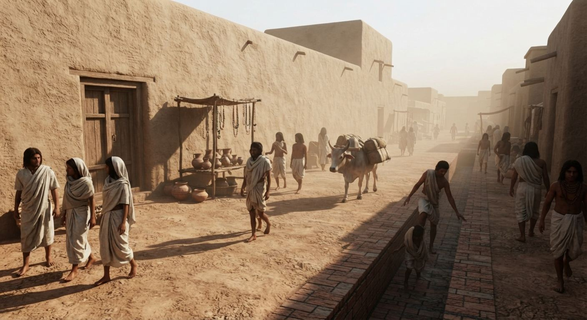
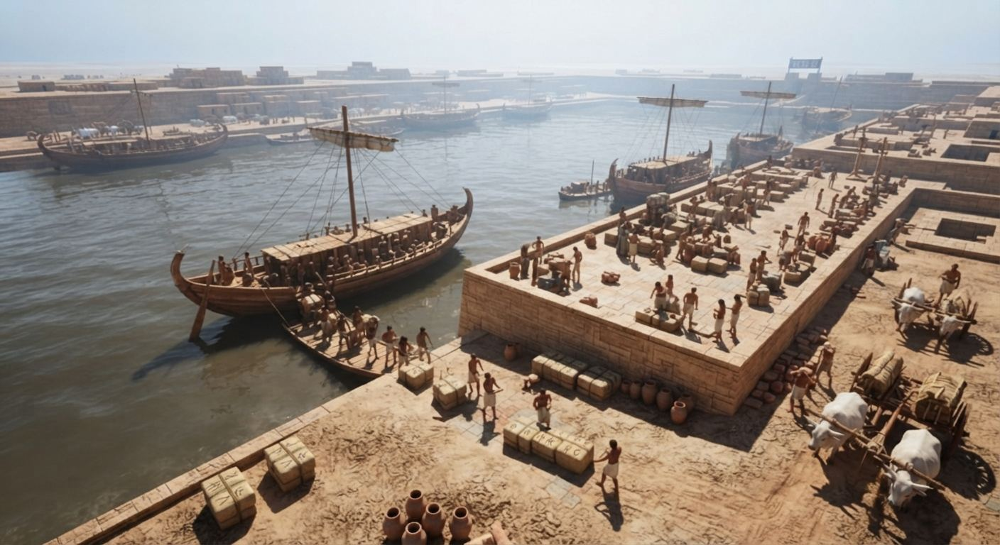

08 · what it was like
If no one can read it, how did they trade?
The translation problem is ours, not theirs. The Indus people spoke their language fluently for a thousand years; only the written signs fell silent. Trade ran on interpreters (an Akkadian seal names a professional "Meluhhan interpreter"), standardized weights, and the seals themselves, cargo signatures readable by anyone in the system, rather like your signature works abroad today.


Questions we love that we cannot fully answer.
If they had no coins, how did they price things?
Probably by weight and trust. The standardized stone weights let a trader in one city and a trader in another agree on quantities without a shared language or a currency. How value itself was reckoned, we do not know.
Did everyone write, or only a few?
The seals cluster with trade and administration, so writing may have been the tool of a literate minority. Most people may never have written a sign. We cannot be sure.
Why no grand temples or royal tombs?
Nobody has found them. The footprint looks strikingly flat: no palaces, no lavish burials, no monuments to a ruler. Whether that means shared power, hidden hierarchy, or something we have no word for is genuinely open.
What language did they speak at home?
The structure points to the Dravidian family, but the sound is unknown, and across so vast an area there may have been more than one language. The script gives us a frame, not a voice.
Why did the writing stop and never return?
The cities de-urbanized around 1900 BCE, and the script seems to have vanished with the administrative system that needed it. When writing returned to the subcontinent centuries later, it was a completely different system.
Was there one Indus people, or many?
The area is enormous, so almost certainly many, with shared crafts and standards. "The Indus" is our label for a system, not necessarily a single people who would have called themselves one thing.